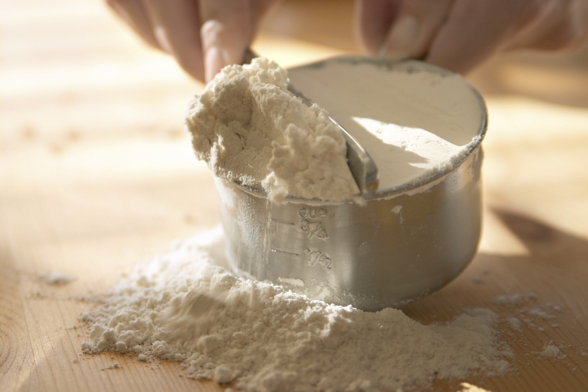

|  |
Mi is az a liszt?A liszt finom őrlemény, általában gabonából. A lisztekből leggyakrabban kenyér-, illetve lepényféléket készítenek, de lehetséges alkoholos itallá is erjeszteni, vagy dísztárgyakat, illetve ragasztót (csiríz) készíteni belőle. A gabonaliszt a malomipar terméke és jellemzően a sütőipar használja fel. Liszt készítéseA gabonát aratás után gabonatárolókban (siló) tárolják, innen szállítják a malmokba. A malmokban egy összetett műveletsor alatt először a szennyeződésektől megtisztítják, aprítják (megőrlik), és osztályozzák (szitálás) termékfajta és szemcseméret szerint. Az őrlés célja a gabonaszemek két fő alkotójának, a héjnak és a magbelsőnek a lehető legtökéletesebb szétválasztása. Ezután a további felhasználásnak megfelelően adagolják és csomagolják a termékeket. A hazai boltokba kerülő legalsó sikérküszöb 28%, amivel a magyar szabvány a világon a legmagasabb követelményű. A farinográf – lisztminősítő műszer – Hankóczy Jenő és Brabender duisburgi mérnök találmánya. |